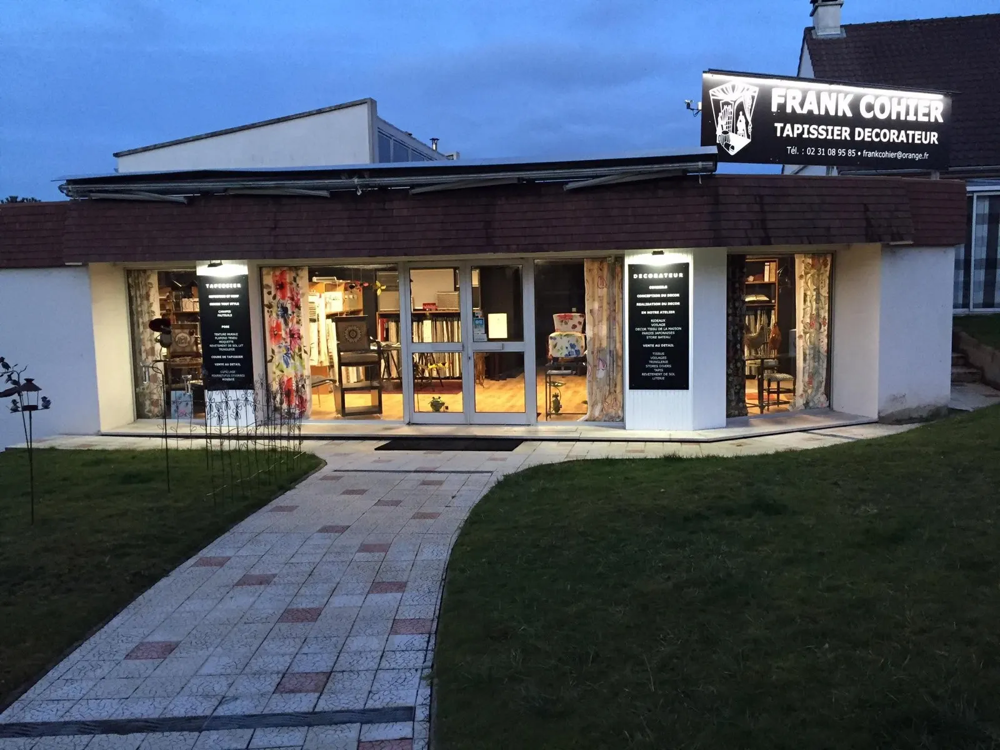
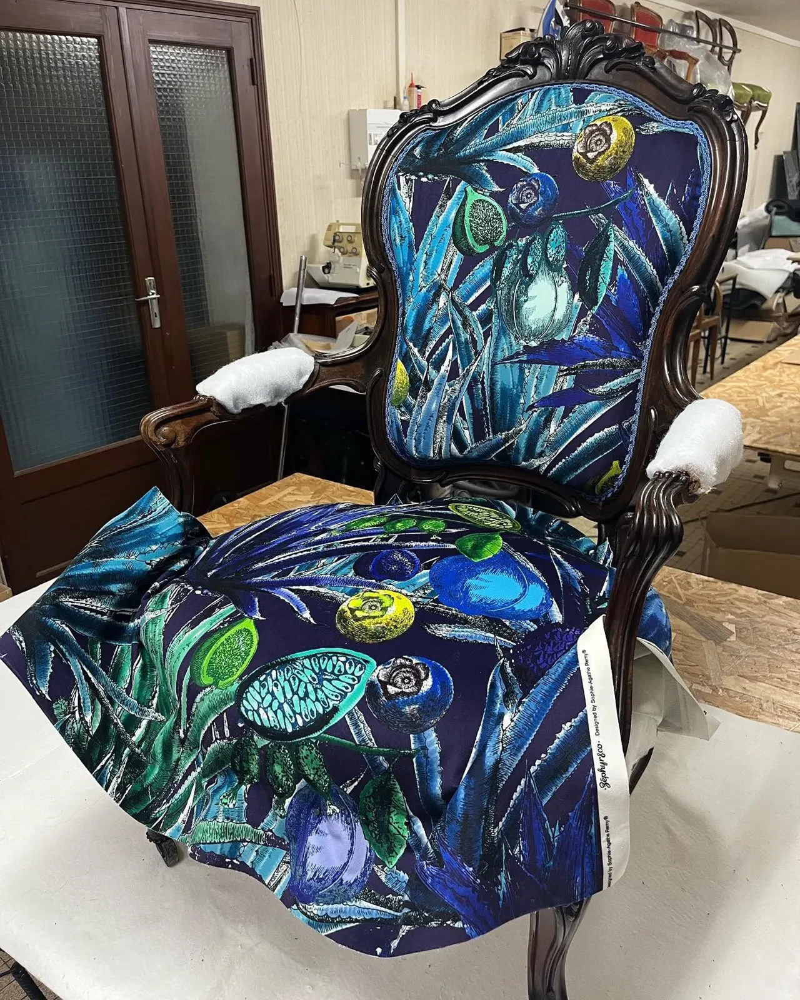
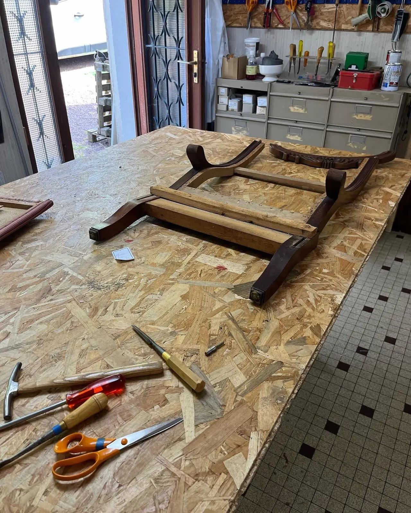
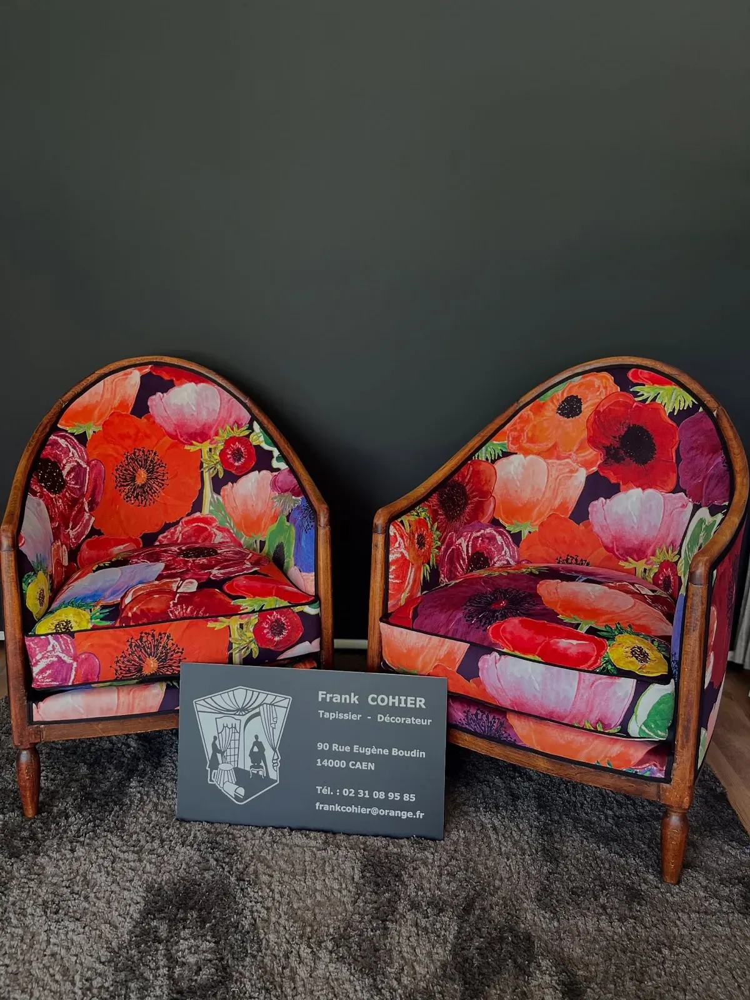
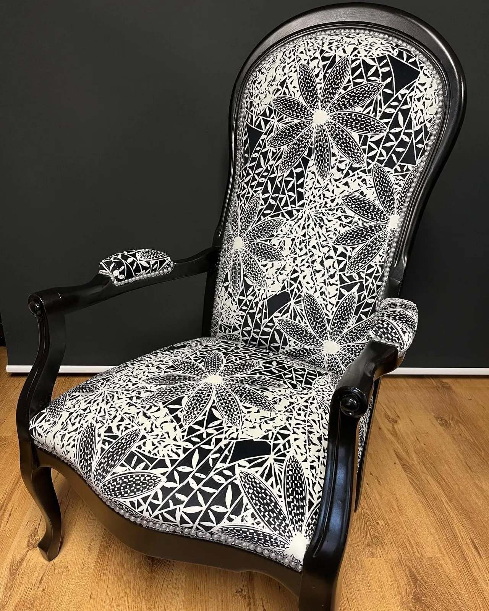
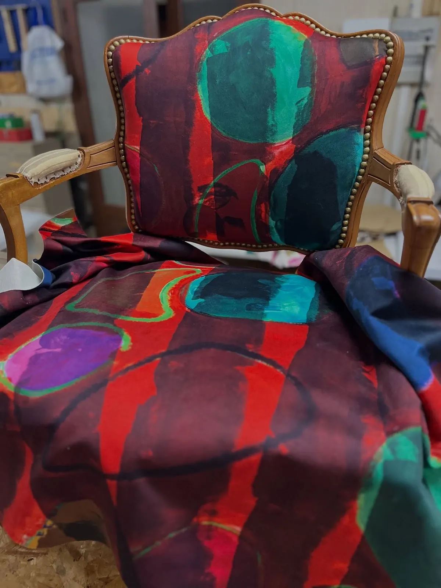
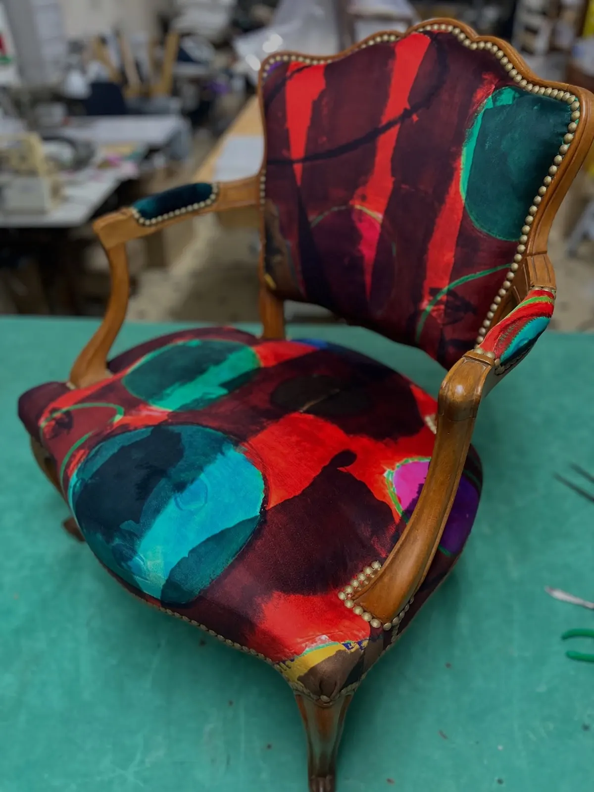
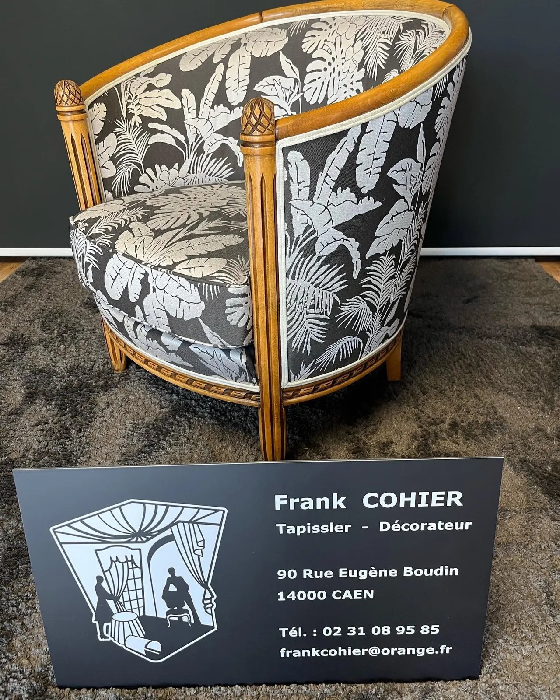
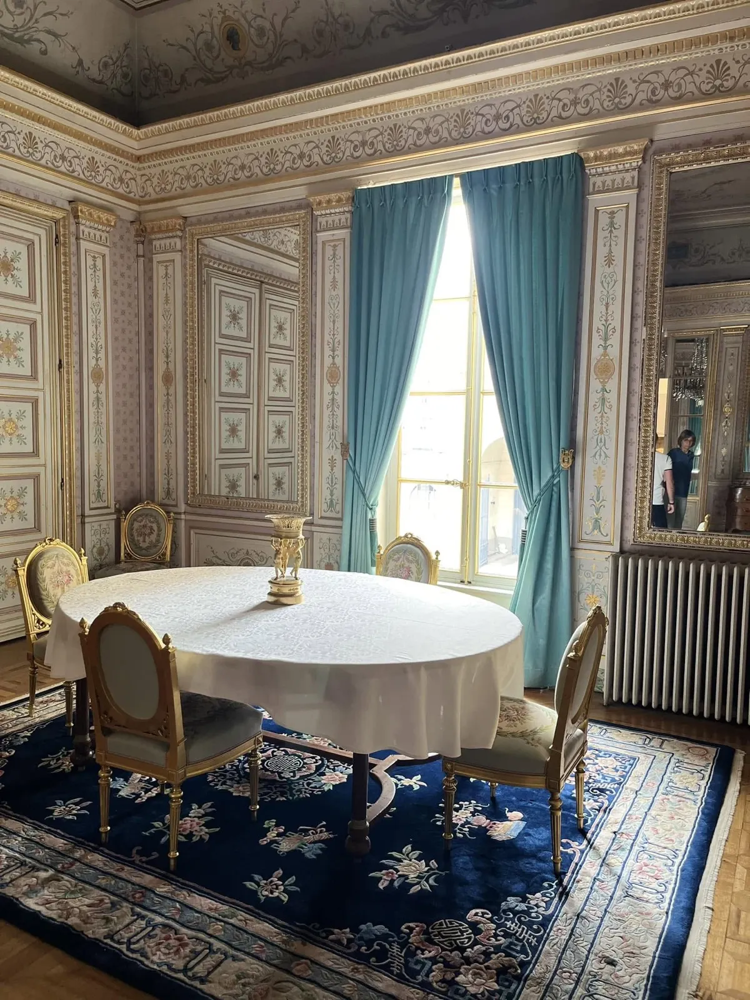
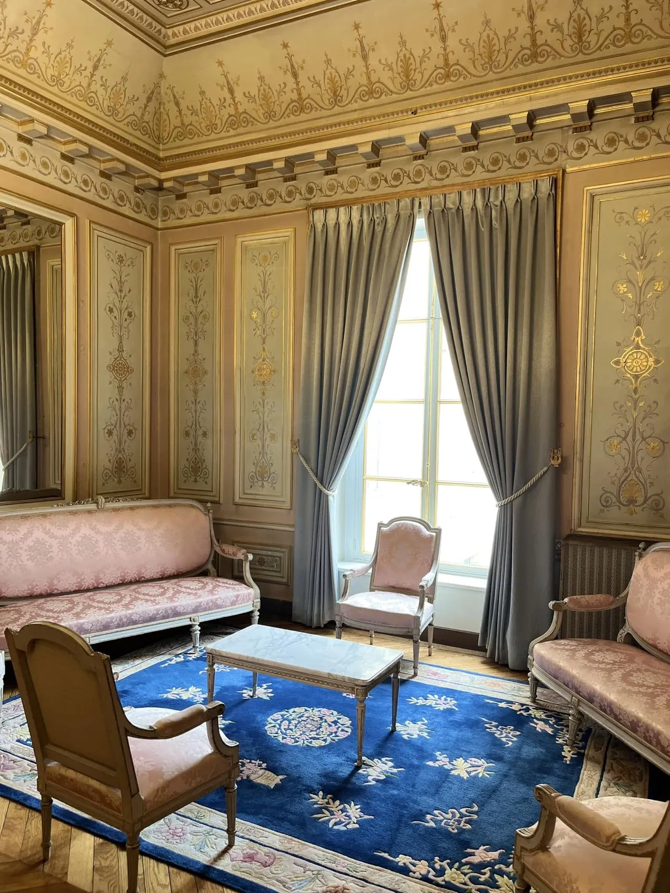

Vos sièges regarnis, vos fenêtres habillées.

90 rue Eugène Boudin
Caen
Frank Cohier, tapissier décorateur à Caen : réfection de sièges tous styles, canapés et fauteuils, décor de la fenêtre, tapisserie d'ameublement et réparation de mobilier.
- Tapissier décorateuratelier-boutique à Caen
- Sièges tous stylescanapés et fauteuils
- Décor de la fenêtretringlerie et voilages
- 4,9 sur 58 avis sur Google
- 14 h à 18 hdu lundi au vendredi

Voltaire en cours, à l'atelier
De la carcasse au dernier clou, le siège entier.
L'atelier reprend le siège depuis sa structure, puis le regarnit et le couvre du tissu choisi, uni ou à grand motif. Il habille aussi les fenêtres.
- Sièges tous styles
- Bergères, cabriolets, voltaires, fauteuils Empire ou Art déco.
- Canapés et fauteuils
- Réfection complète, garniture et tissu.
- Décor de la fenêtre
- Tringlerie, voilages et rideaux.
- Ameublement
- Tapisserie d'ameublement et réparation de mobilier.
- Cours de tapisserie
- À l'atelier, des élèves regarnissent leur propre siège, jusqu'au petit fauteuil Empire.
Quelques sièges passés par l'atelier.
Des bois clairs, dorés ou noircis, et des tissus qui vont du gris uni aux coquelicots.

Bergères Art déco


Le tissu poséUn cabriolet en bois clair : le tissu drapé avant la pose, puis le fauteuil fini.

« Le tapissier-décorateur aux 46 ans de passion »
Le décor de la fenêtre.
Tringlerie, voilages, rideaux : Sabine et Frank ont habillé les fenêtres de trois salons de la Préfecture du Calvados.
- Salon Bleu
- Salon des Abeilles
- Salon Rose

Salon Bleu
Salon RosePasser à l'atelier.
L'atelier-boutique est au 90 rue Eugène Boudin, à Caen. Un siège à refaire, des rideaux à poser : appelez ou passez l'après-midi.
- Lundi
- 14 h – 18 h
- Mardi
- 14 h – 18 h
- Mercredi
- 14 h – 18 h
- Jeudi
- 14 h – 18 h
- Vendredi
- 14 h – 18 h
- Samedi et dimanche
- Fermé
Jours fériés : horaires à vérifier sur la fiche Google.